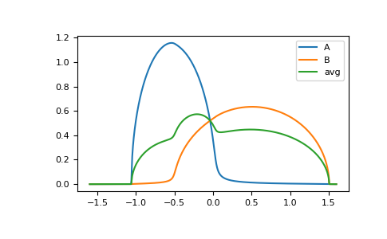

gftool.beb.solve_root¶
-
gftool.beb.solve_root(z, e_onsite, concentration, hopping, hilbert_trafo: Callable[[complex], complex], self_beb_z0=None, restricted=True, rcond=None, **root_kwds)[source]¶ Determine the BEB self-energy by solving the root problem.
Note, that the result should be checked, whether the obtained solution is physical.
- Parameters
- z(…) complex np.ndarray
Frequency points.
- e_onsite(…, N_cmpt) float or complex np.ndarray
On-site energy of the components.
- concentration(…, N_cmpt) float np.ndarray
Concentration of the different components.
- hopping(N_cmpt, N_cmpt) float array_like
Hopping matrix in the components.
- hilbert_trafoCallable[[complex], complex]
Hilbert transformation of the lattice to calculate the local Green’s function.
- self_beb_z0(…, N_cmpt, N_cmpt) complex np.ndarray, optional
Starting guess for the BEB self-energy.
- restrictedbool, optional
Whether the diagonal of self_beb_z is restricted to self_beb_z.imag <= 0 (default: True). Note, that even if restricted=True, the imaginary part can get negative within tolerance. This should be removed by hand if necessary.
- rcondfloat, optional
Cut-off ratio for small singular values of hopping. For the purposes of rank determination, singular values are treated as zero if they are smaller than rcond times the largest singular value of hopping.
- root_kwds
Additional arguments passed to
scipy.optimize.root. method can be used to choose a solver. options=dict(fatol=tol) can be specified to set the desired tolerance tol.
- Returns
- self_beb_z(…, N_cmpt, N_cmpt) complex np.ndarray
The BEB self-energy as the root of
self_root_eq
- Raises
- RuntimeError
If the root problem cannot be solved.
See also
Notes
The root problem is solved for the complete input simultaneously. This provides a speed up as the code is vectorized, however, it comes with the trade-off of complicating the root search. So in some cases, it makes sense to split the input arrays, and calculate the root separately.
The default method is ‘krylov’, which typically does a good job. In some cases ‘excitingmixing’ was found to do a better job, especially close to the CPA limit, where some singular values become small.
The progress of the root search is logged for the
logging.DEBUGlevel.Examples
>>> from functools import partial >>> eps = np.array([-0.5, 0.5]) >>> c = np.array([0.3, 0.7]) >>> t = np.array([[1.0, 0.3], ... [0.3, 1.2]]) >>> hilbert = partial(gt.bethe_hilbert_transform, half_bandwidth=1)
>>> ww = np.linspace(-1.6, 1.6, num=1000) + 1e-4j >>> self_beb_ww = gt.beb.solve_root(ww, e_onsite=eps, concentration=c, hopping=t, ... hilbert_trafo=hilbert) >>> gf_loc_ww = gt.beb.gf_loc_z(ww, self_beb_ww, hopping=t, hilbert_trafo=hilbert)
>>> import matplotlib.pyplot as plt >>> __ = plt.plot(ww.real, -1./np.pi/c[0]*gf_loc_ww[:, 0].imag, label='A') >>> __ = plt.plot(ww.real, -1./np.pi/c[1]*gf_loc_ww[:, 1].imag, label='B') >>> __ = plt.plot(ww.real, -1./np.pi*np.sum(gf_loc_ww.imag, axis=-1), label='avg') >>> __ = plt.legend() >>> plt.show()

{kind=link}